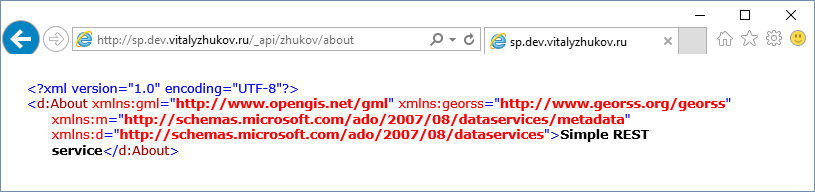

Создание REST-сервиса и публикация его в SharePoint 2013.

Решение создано в Visual Studio 2015 и предназначено для развертывания в ферме SharePoint 2013 On-Premise. Для его открытия потребуется наличие установленного пакета Office Developer Tools.
Решение уровня фермы (farm solution) и не предназначено для его публикации в SharePoint Online либо в виде sandbox solution.
Описание
SharePoint позволяет публиковать свои REST-сервисы и обращаться к ним, используя HTTP-запросы с префиксом _api. Помимо этого разработчикам доступна возможность создавать свои собственные REST-сервисы и публиковать их в веб-приложениях SharePoint.
Такие сервисы доступны по HTTP-запросам вида:
http://sharepoint/_api/YourServiceNamespace
Публикуемые сервисы могут содержать как свойства так и методы. Данные могут быть представленны как в виде XML, так и в виде JSON. Для получения данных в формате JSON в заголовок запроса достаточно добавить ключ Accept, со значение application/json;odata=verbose.